■一个方程中间有一个等号，说明两边相等。像这样：
X ＋2＝6
左边的（x ＋2）等于右边的6。
■公式是一种特殊的方程，它表示不同变量之间的关系。
例如：计算盒子容积的公式是：
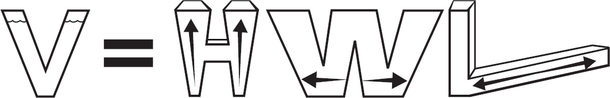
或（V
＝H
乘以W
再乘以L
）
V
＝容积，H
＝高度，W
＝宽度，L
＝长度
如图2-7所示：
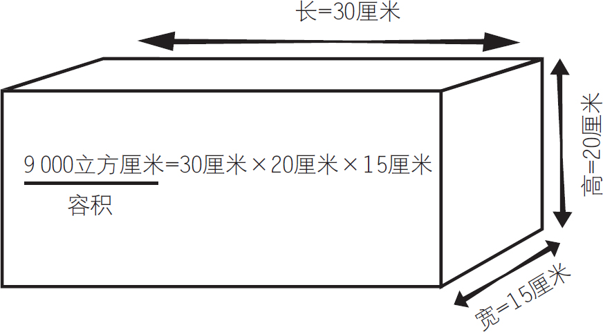
图2-7
■身体质量指数公式是：
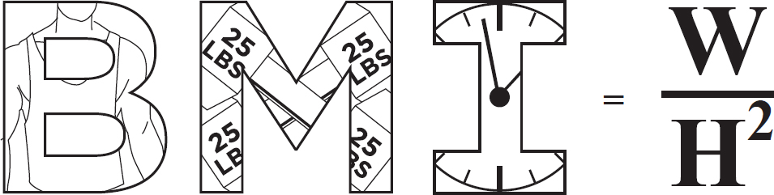
BMI ＝身体质量指数，W ＝体重，H ＝身高
例如：
体重指数＝19.53
■速率公式是：
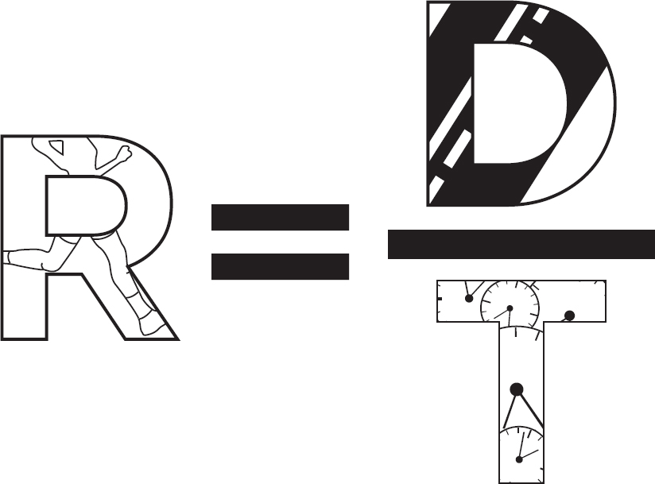
R ＝速率，D ＝距离，T ＝时间
■简单的利息公式是：
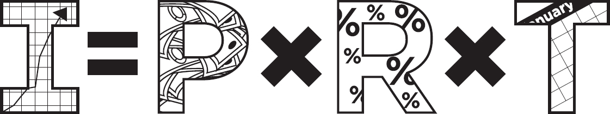
I ＝利息，P ＝本金，R ＝利率，T ＝时间
例如：
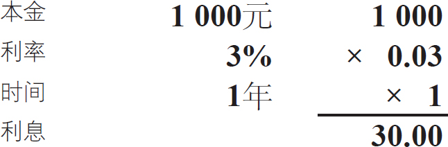
■复利公式是：
未来价值＝本金×（1＋利率）时间年数的幂
例如：
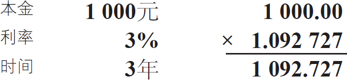
数学表达：
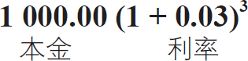
在计算器上计算：
1.03×1.03×1.03×1000＝1092.727
想要一个装置来帮助你计算代数变量值吗？自己动手制作一个，这样无论在哪，你和你的小伙伴们都可以用这个奇妙的代数计算器来计算X 。
需要准备的东西：
►纸板
►回形针或黄铜纸扣
►CD或DVD或罗盘
►剪刀
►纸
►铅笔
►透明胶带
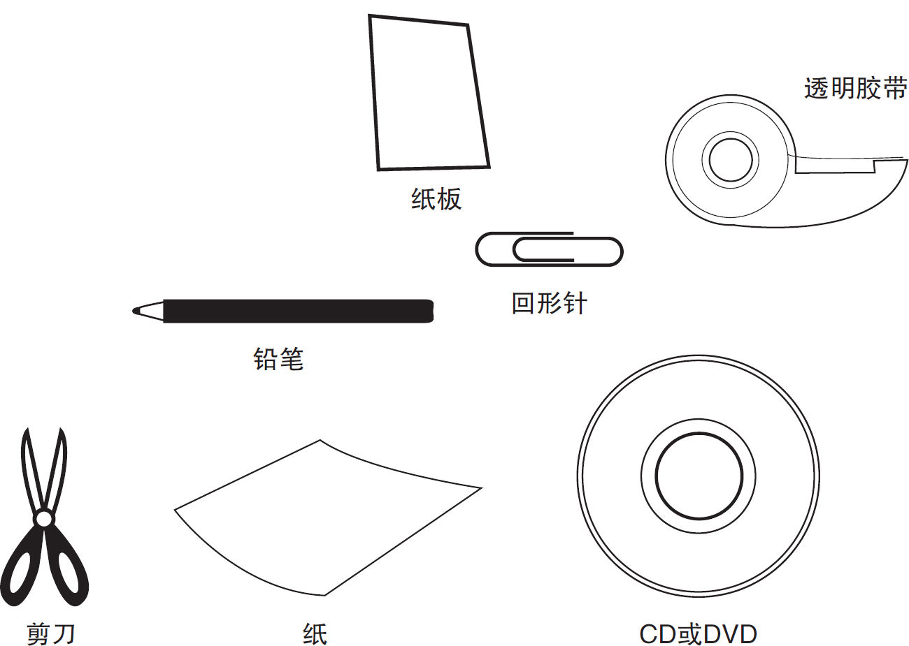
你可以使用下一页的插图作为实验参考，并按步骤操作。
首先，用纸板制作两个CD或DVD大小的圆盘，或者使用罗盘来创建直径为3厘米的圆盘，如图2-8所示。
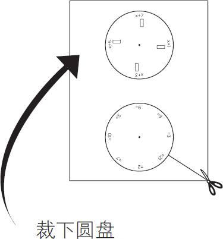
图2-8
接下来，裁剪出如图2-9形状的纸盖，包括显示“窗口”的矩形盖孔。或者你可以用铅笔在纸盖上画上虚线，然后小心地沿着虚线剪出“窗口”。

图2-9
把盖子对折，在窗口下方打一个孔，见图2-10。在圆盘的中心也打一个孔，如图2-11所示。
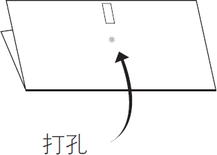 |

|
| 图2-10 | 图2-11 |
把圆盘放在盖子上，将外盖上的黄铜纸扣或回形针的固定夹推入并穿过圆盘的孔洞，如图2-12所示。
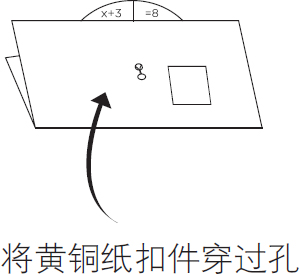
图2-12
在窗口周围拨号并查看窗口中的信息，见图2-13。
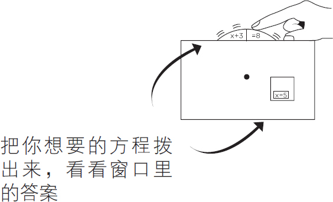
图2-13
下图是实验的一个举例说明。
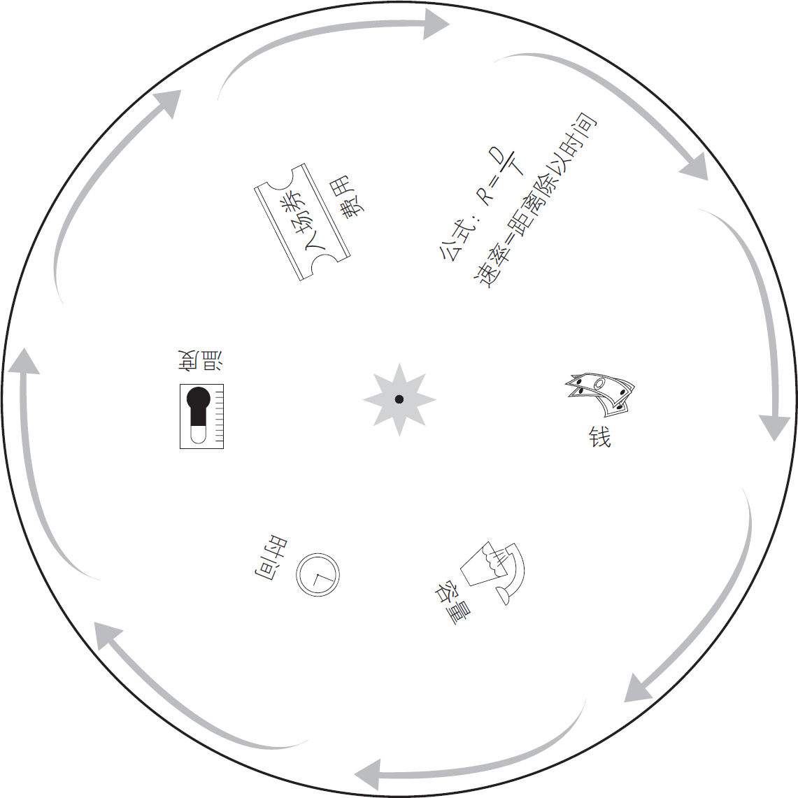
下图是实验的一个举例说明。
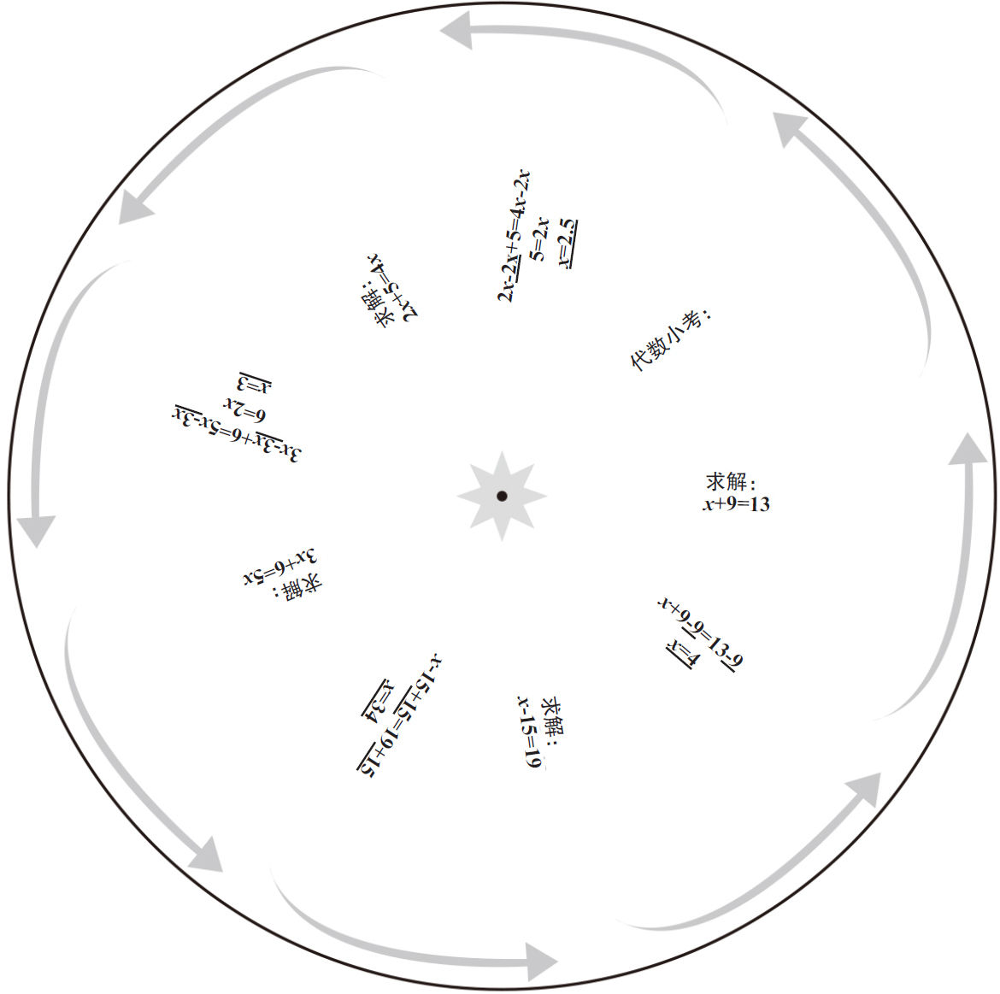
变量可以是数字，也可以是人或事物，比如电影票。
变量，如X 或C 或F ，应用方程式和公式计算能节省时间。
字母x可以表示一个变量：
变量相当于是一个未知量的占位符。
一个因变量，或函数，如f（x ），它的值随变量的值变化而变化。
方程式等号的两边的值必须相等。
1＋3＝4
两边的值的和都是4。
求解方程x ＋3＝6中x 的值，从两边减去常数3。
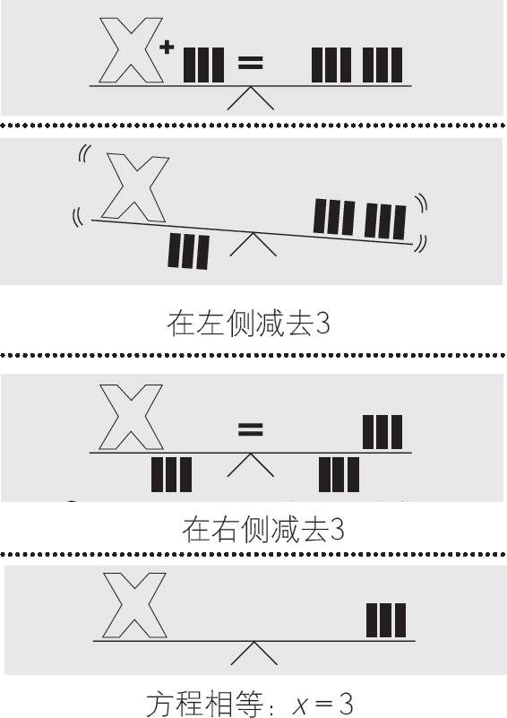
这样你可以在等式的一侧得到一个变量的值。
当方程两边都有同一个变量时，以这种方式分离它们：
X ＋3＝2X →X –X ＋3＝2X –X
相互抵消
3＝1X 或X ＝3
■小明比小珍大三岁。已知小珍22岁，那么小明的年龄是多少？
变量A 将代表小明的年龄，小珍的年龄是22岁，所以等式的形式是这样的：
A –3＝22
让我们来求解A ：A –3＋3＝22＋3
A ＝25
■你也可以使用这种方式来计算完成目标所需要的时间。
例1：已知小华每小时可以制作5支箭，那么小华制作15支箭需要多长时间？
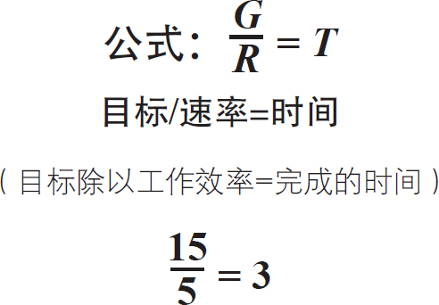
（15支箭除以小华每小时能制作5支箭＝3小时完成）
（当有两个或两个以上的人参与时，可以使用相同的方法。）
例2：小华每小时能制作5支箭，李明每小时只能制作3支箭。如果他们一起工作，制作15支箭需要多长时间？
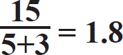
（小华的5支箭＋李明的3支箭，相当于每小时8支箭；15支箭÷8支箭每小时＝1.8小时完成）
例3：小杨可以在6小时内打扫完公寓，小王可以在4小时内打扫干净。如果他们一起工作，要多长时间才能打扫完公寓？
使用公式
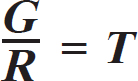
，我们的目标＝1，或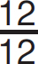
（当整个公寓都打扫干净了）。小杨的速率是每小时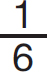
的工作量。小王的速率是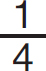
每小时。他们转换成公分母分别是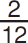
和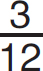
，它们的和是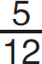
每小时。所以，12除以5等于2.4，他们一起打扫公寓需要花2小时24分钟。飞行速率问题
■两位超级英雄相距500千米。比尔从西向东以每小时100千米的速度飞行，而安妮从东向西以每小时80千米的速度飞行。如果他们全速飞行，他们要多久才能相遇？
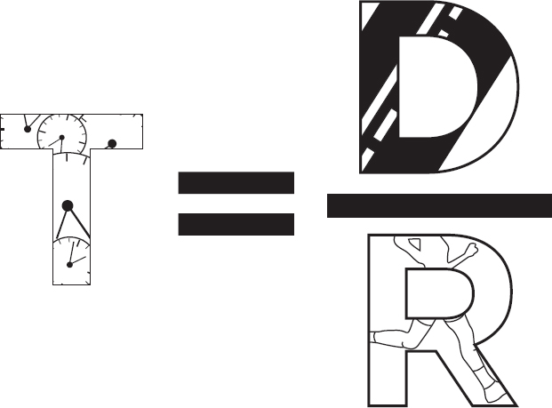
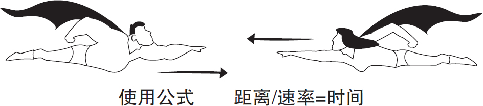
100千米每小时＋80千米每小时＝180千米每小时。
500千米/180千米每小时＝2.8小时，他们相遇需要2.8个小时。
工作问题
■粉刷一间房子，比尔可以在32个小时内完成，凯文可以在40个小时内完成，彼得可以在16个小时内完成。如果他们3人一起工作，要花多长时间可以粉刷完这间房子？
首先，计算每个人每天完成多少工作，假设一天按8小时工作量计算。
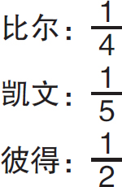
接下来，找出3个分数的公分母（20），然后把3个分数转换成分母相同的分数相加：
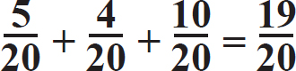
所以3个人一起工作，粉刷完房子需要的时间略低于23小时，准确的是22.8个小时，步骤显示在下面：
让我们交叉相乘 找到速率：
找到速率：
X ×20＝20X 19×24＝456
所以：20X ＝456 456÷20＝22.8
用一个神奇的圆盘计算器来检验你在日常生活中的代数计算能力。
需要准备的东西：
►纸板
►回形针或黄铜纸扣
►CD或DVD或罗盘
►剪刀
►纸
►铅笔
►透明胶带
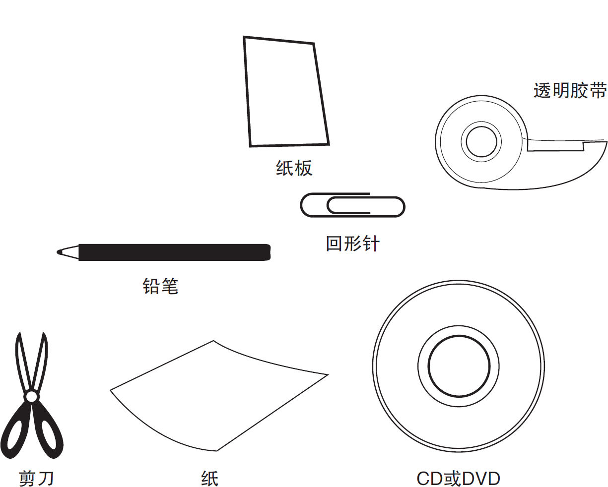
你可以使用下一页的插图作为实验参考，并按步骤操作。
用纸板制作一张CD或DVD大小的圆盘，或者用罗盘来创建直径为3厘米的圆盘，如图2-14所示。接下来，剪出如图2-15所示的矩形盖，包括“窗口”孔。
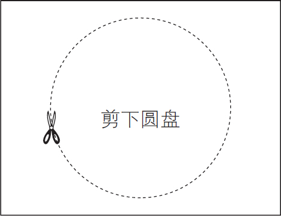 |
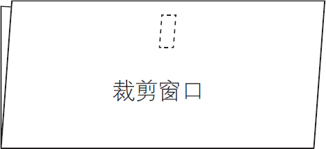 |
| 图2-14 | 图2-15 |
把盖子对折，在窗口下方打一个孔，如图2-16所示。在圆盘的中心也打一个孔，如图2-17所示。
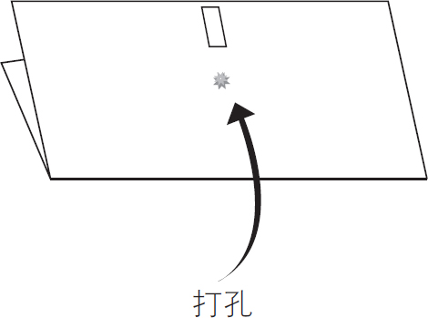 |

|
| 图2-16 | 图2-17 |
把圆盘放在盖子上，将外盖上的黄铜纸扣件或回形针固定夹推入并穿过圆盘的孔洞，如图2-18所示。
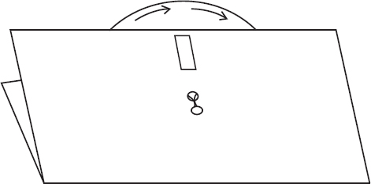
图2-18
在窗口周围拨号并查看窗口中的信息，见图2-19。
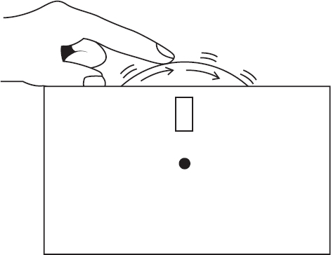
图2-19
下图是实验的一个举例说明。
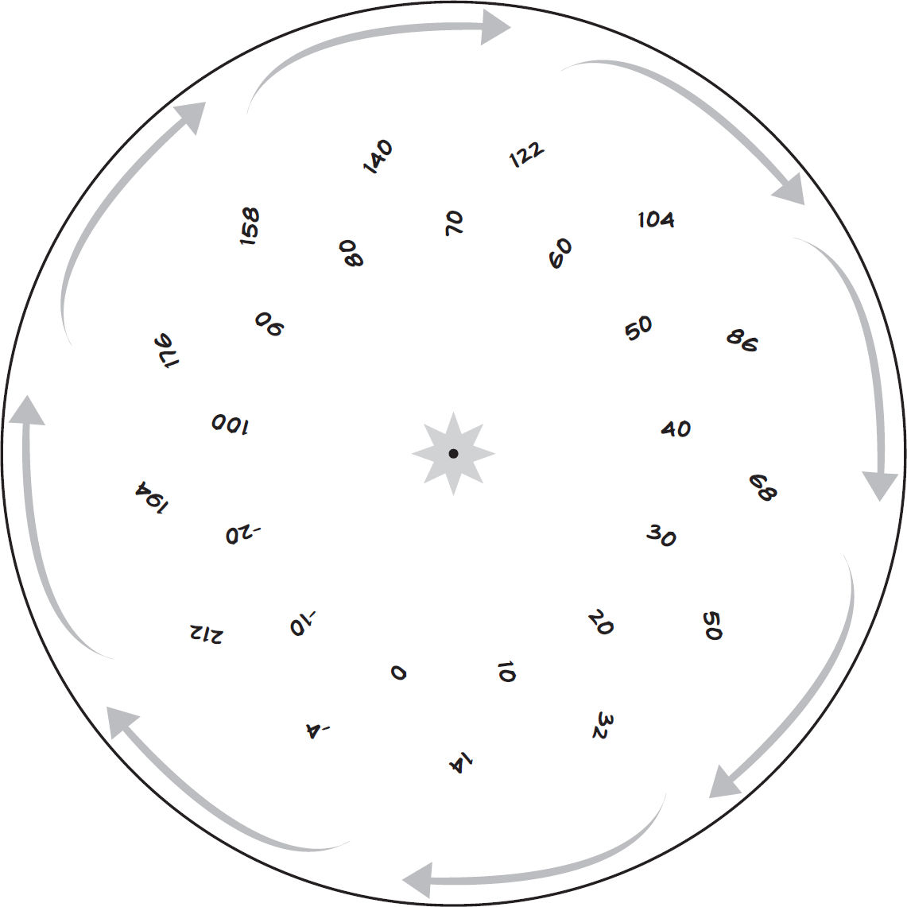
 下面的代数公式可以将摄氏温度转换为华氏温度，反之亦然。
下面的代数公式可以将摄氏温度转换为华氏温度，反之亦然。
［X -32（°F）］×5÷9＝（°C）
函数：f （x ）＝（X -32）×5÷9
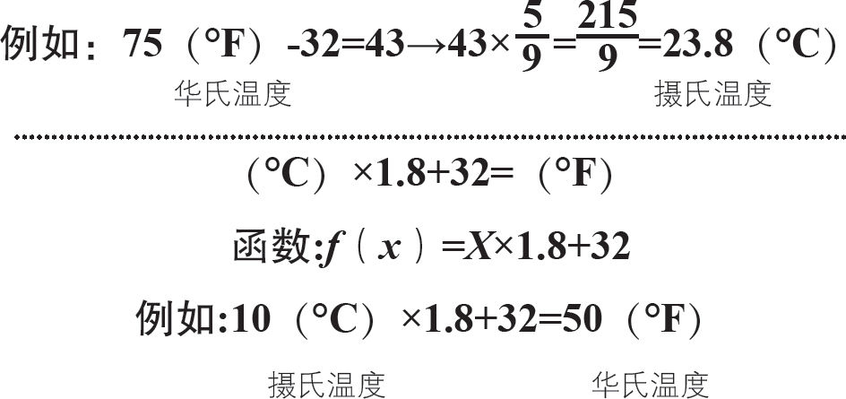
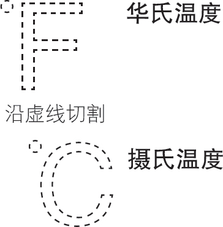
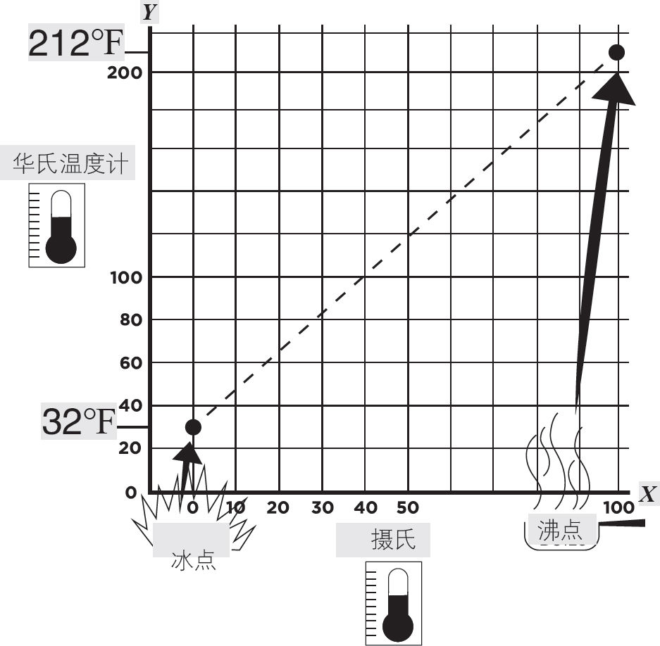
函数表示两个变量之间的关系。函数是一个预定义的公式，它使用f （x ）来表示。f （x ）意味着x的函数。
在这个例子中，变量f （x ）等于变量（x ＋2）的值。代数函数可以显示在图表上表现趋势，如例1所示。

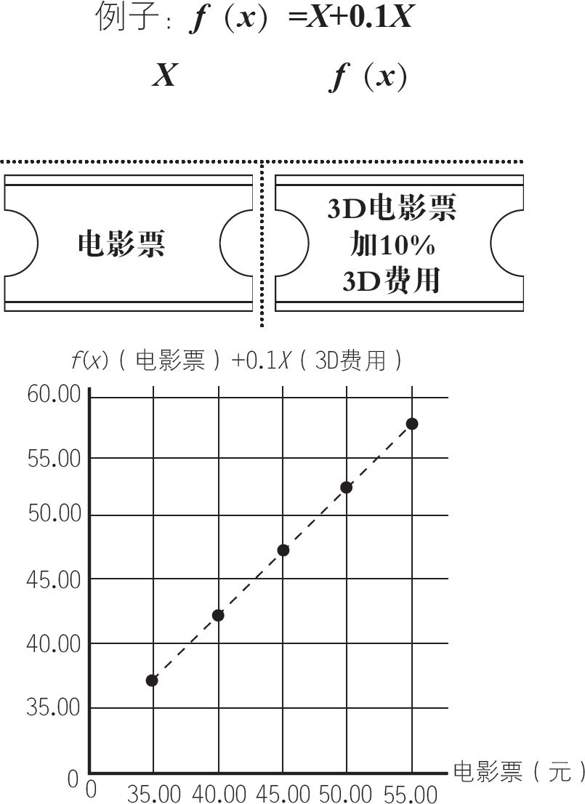